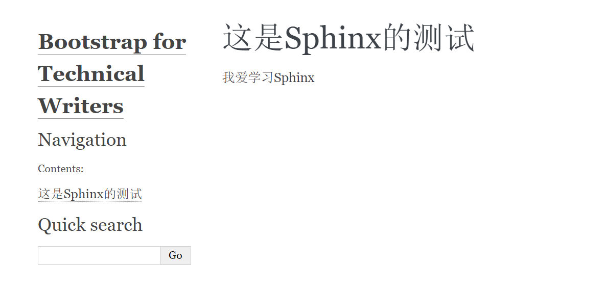

Sphinx快速入门¶
Sphinx是一个静态网页发布工具，可将rST和md文件，发布为各类常见的用户帮助如联机帮助，用户手册等。
安装Sphinx¶
快速新建项目¶
在桌面上创建一个文件夹，并命名为
sphinx-demo在Terminal(命令行界面）中浏览至上述文件夹，并运行命令:
sphinx-quickstart
在对话框式的选择中，Y/N的选项，选Y；如果询问配置，直接复制[]中的内容，如[.rst]，则填写.rst
若成功建立项目，则会得到如图所示的文件夹结构:
. ├── build ├── make.bat ├── Makefile └── source ├── conf.py ├── index.rst ├── _static └── _templates
往项目中添加内容¶
浏览至 source 文件夹，并在其根目录下创建新文件夹demo
在上方 demo 文件夹中，新建test.rst文件，并在其中输入如下内容:
======================= 这是Sphinx的测试 ======================= 我爱学习Sphinx
打开source文件中的 index.rst，将test.rst的文件添加至目录中，具体如下:
.. toctree:: :maxdepth: 2 :caption: Contents: demo/test.rst
在Terminal中运行编译命令:
sphinx-build -b html source build
如编译成功，生成的
index.html即出现在\build文件夹中,如下所示：